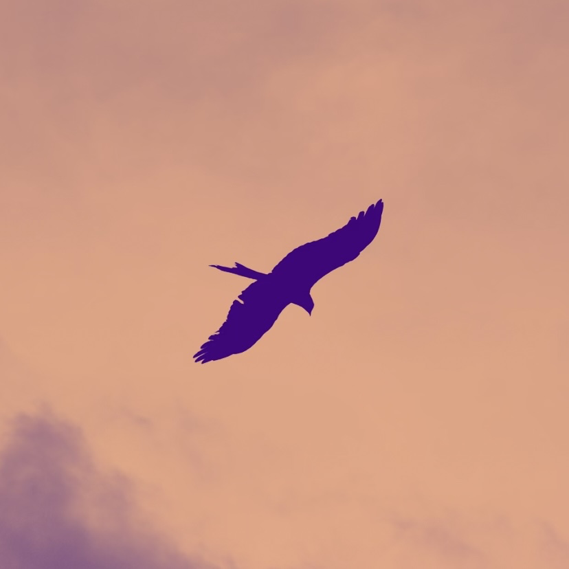

I am an about-to-graduate PhD student from the Technion — Israel Institute of Technology in Combinatorial Optimization. My long term goal is to research and teach Theoretical Computer Science.
My advisor at the Technion is Prof. Asaf Levin, and together we worked on developing Approximation schemes for scheduling and bin packing with cardinality constraints and variants of this problem. Please refer to my Google Scholar or DBLP for an aggregate of my publications.
During my PhD, I was also a research assistant under Prof. Avi Ostfeld. Together we worked on robust optimization of water quality. Prof. G R Abhijith and I have released a python package for water quality simulation called EPyT-C. I have been trying to understand Deep learning throughout my PhD because of its wide implications. I have done few projects on deep learning and a project in MLOps developing a full ML pipeline (please refer to my CV).
I am a novice runner, programmer, photographer, reader, and writer.